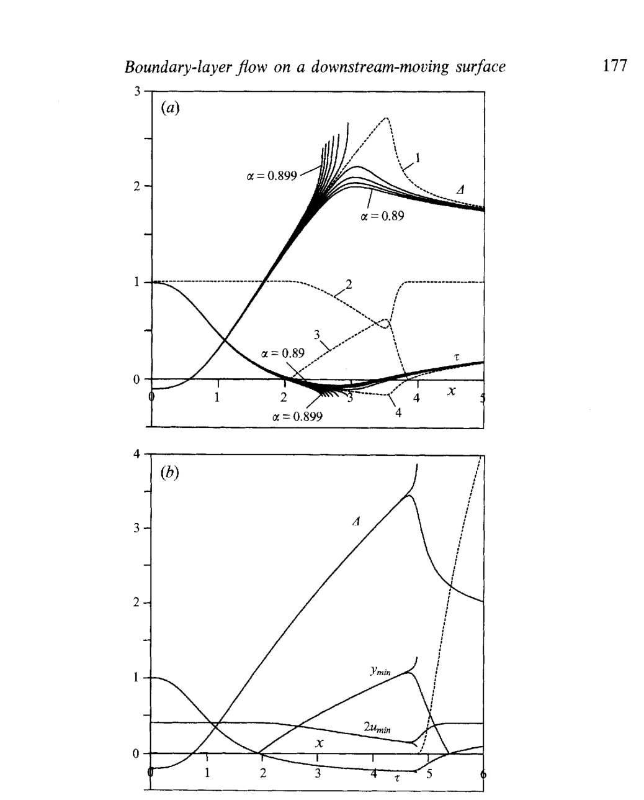
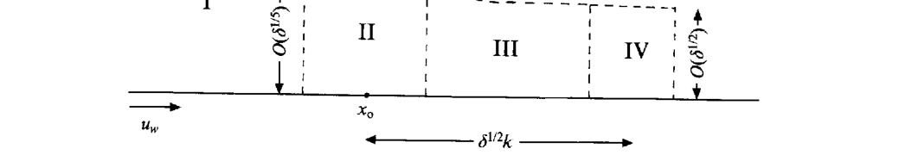
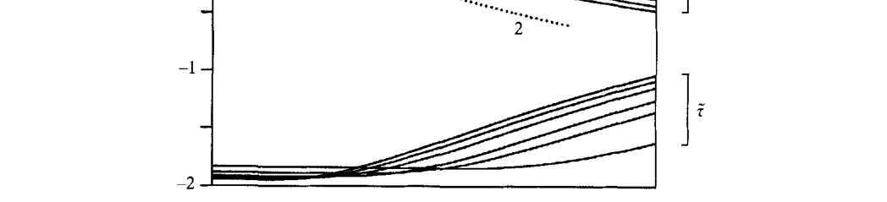

01中文摘要
对二维不可压缩定常边界层，数值和解析研究固体表面顺主流方向运动时分离奇异性的形成。与先前研究的、位于外压分布极大点处的初始分离不同，本文的破缺发生在逆压驱动下：Moore–Rott–Sears点上游为规则流场，下游呈代数非解析性。研究表明，对精确正则逼近的微小偏离会导致线性扰动指数放大；在随后非线性阶段，解或在有限距离内以爆破（blow-up）奇异性终止，或正则地穿过奇异站继续。文中还考虑滑移速度渐近小的情形，并讨论其与固定壁面边缘分离的联系。
原始摘要（英文/原文）
The formation of separation singularities in solutions of the classical boundary-layer equations is studied numerically and analytically for the case of a two-dimensional incompressible steady flow near a solid surface moving in the direction of the main stream. Unlike the previously studied regime of the incipient separation located at the maximum point in the external pressure distribution, the breakdown in this work occurs under an adverse pressure forcing and involves a regular flow field upstream of the Moore-Rott-Sears point with an algebraic non-analyticity downstream. Small deviations from the precisely regular approach to the singular point are shown to result in an exponential amplification of linear disturbances; in the subsequent nonlinear stage the solution terminates in a finite-distance blow-up singularity or, alternatively, continues in a regular fashion across the singular station. The case of asymptotically small slip velocities is considered and a connection with marginal separation on a fixed wall is discussed.
02阅读说明
文章类型：理论（边界层渐近分析）与数值计算结合，JFM 308 (1996) 171–194，共24页。材料为bundle全文（含7幅抓图清单）；正文公式在文本层大量丢失，已用PDF第4、8–9、15–16、18页核对(2.1)–(2.5)、(3.1)–(3.14)、(4.9)–(4.22)、(4.26)–(4.37)的关键式。图表可读，信息完整度高。提取口径：只依据全文与图注，不引入外部文献结论；页码为期刊页码（PDF页序=期刊页−170）。 文章类型：期刊
03一句话核心与三句话摘要
下游运动壁面边界层在逆压梯度下可发生边缘分离：上游正则、下游代数奇异且对扰动指数敏感。
- 运动壁面边缘分离此前由Sychev(1987)针对旋转圆柱提出，假定奇点位于外压最大点（零压梯度）；固定壁面理论则对应减速外流，两者图像是否通用并不清楚（p.172–173）。 原文明确
- 作者用模型压力梯度问题数值求解Prandtl方程，并在MRS点邻域做局部渐近分析：上游流场正则，下游位移厚度按(x−x_s)^{1/4}代数奇异，扰动呈exp[μ/(x_s−x)]型指数放大（p.174–181）。 AI概括
- 微小参数偏差会使流动在MRS点前以有限距离爆破终止，或平滑转入加速流；小滑移极限下临界压力幅值α_c=α0−δa1/a2，并以(4.14)的积分微分方程统一描述正则与奇异两支（p.181–190）。 原文明确
04核心内容清单
| 要点 | 类型 | 重要性 | 原文依据 | 属性 |
|---|---|---|---|---|
| 证明下游运动壁面在逆压梯度下也可发生边缘分离奇点，且上游流场完全正则、下游位移厚度代数奇异。 | 主结论 | A | p.171摘要, p.173, p.178–179 | 原文明确 |
| 边缘奇点的局部相似问题(3.10)只有两个解：未扰动解φ=z³/6与奇异解φ'(0)=1.6236、c̄=1.2956。 | 理论/数值 | A | p.179, (3.10) | 原文明确 |
| 下游最小速度按u_min∝(x−x_s)^{1/2}、位移厚度按Δ−Δ(x_s)∝(x−x_s)^{1/4}变化，呈强不对称。 | 标度律 | A | p.179, (3.11)–(3.13) | 原文明确 |
| 对上游微小扰动的响应为指数型ψ1∝exp[μ/(x_s−x)]，μ>0，远强于固定壁面的代数响应。 | 线性稳定性 | A | p.180–181, (3.18)–(3.21) | 原文明确 |
| 受扰后非线性演化二分：轻微减速导致有限距离爆破（Sychev/Elliott型），轻微加速则保持正则并趋于自相似加速解。 | 非线性分岔 | A | p.181–183, 图4、图5 | 原文明确 |
| 固定壁标定：α_c=0.775，x_s≈2.29，与经典结果一致，验证模型与数值。 | 验证 | A | p.176, 图1 | 原文明确 |
| 滑移推迟分离：δ=0.1时α_c≈0.893；δ=0.2时α_c≈1.014、x_s=4.6562、Δ(x_s)=3.4494。 | 定量结果 | A | p.176–178, 图2 | 原文明确 |
| 小滑移渐近：外层奇性系数κ=Δαa2+δa1决定正则/奇异；临界α_c=α0−δa1/a2，一阶移动量为O(δ)。 | 渐近理论 | A | p.184–185, (4.6)–(4.9) | 原文明确 |
| 更靠近阈值时由积分微分方程(4.14)控制，γ̄=0为分界：γ̄<0正则、γ̄>0有限距离奇异，壁面剪切按(X̄_s−X̄)^{-1/4}发散。 | 核心方程 | A | p.185–186, (4.14)–(4.18), 图6 | 原文明确 |
| γ̄→0时非线性在L=[−5θ0^{-1}ln|γ̄|]^{1/5}处恢复，体现对数型长距离敏感性。 | 渐近结果 | B | p.186, (4.19)–(4.22) | 原文明确 |
| 完全非线性区方程(4.28)–(4.31)在b→2时回到§3的MRS奇点结构，支持小滑移极限下边缘结构的普适性。 | 极限一致性 | B | p.187–190, 图7、图10 | 原文明确 |
| Sychev(1987)把奇点置于压力最大点/零压梯度的图像不能直接搬到本文结构；旋转圆柱奇点可能在上游有限距离处。 | 讨论/辨析 | B | p.191–192, §5 | 原文明确 |
05引言：研究问题与领域缺口
研究问题：二维定常不可压边界层在沿主流方向运动的壁面上，逆压梯度驱动的边缘（marginal）分离奇点具有什么局部结构，与固定壁面情形及Sychev(1987)旋转圆柱情形有何不同。领域缺口：Telionis & Werle(1973)与Sychev(1980)、Elliott et al.(1983)已给出运动壁面强爆破奇点；固定壁面边缘分离理论由Ruban(1981,1982a)与Stewartson et al.(1982)建立；但运动壁面边缘奇点仅在旋转圆柱中被讨论，且假定位于压力最大点/零压梯度（p.171–173）。本文目标：证明逆压梯度下运动壁面也能出现边缘奇点，并给出四个新特征——上下游均粘性主导、上游完全正则而下游代数奇异、对上游微小扰动呈指数敏感、受扰后非线性转化为爆破或正则加速（p.173）。适用边界：二维、定常、不可压、高Re边界层极限，壁面滑移速度为参数δ（p.174）。
06流动条件与几何构型
| 项目 | 数值/描述 | 依据 | 备注 |
|---|---|---|---|
| 流体与流动 | 不可压、二维、定常、层流边界层 | p.174, §2 | 高Re渐近，未给具体Re数 |
| 壁面运动 | 无限长平板沿x方向以速度δ移动；δ=0、0.1、0.2 | p.174, p.176 | δ为无量纲滑移速度 |
| 压力梯度 | p'(x)=αx²/(1+x³)(x>0)，p'(x)=0(x<0)，α>0 | p.175, (2.5) | 最大值p'_max=2^{2/3}α/3，位于x=2^{1/3} |
| 临界压力幅值 | δ=0：α_c=0.775；δ=0.1：α_c≈0.893；δ=0.2：α_c≈1.014 | p.176–178 | 正则解精确值0.89343538、1.01448494 |
| 边缘奇点位置 | δ=0：x_s≈2.29；δ=0.2：x_s=4.6562 | p.176–178 | δ=0.1的x_s未给数值 |
| 位移厚度峰值 | δ=0.2：Δ(x_s)=3.4494 | p.178 | δ=0.1仅称出现明显极大，未给数值 |
| 初始条件 | ψ=½y²+δy（x=0，y≥0） | p.174, (2.3) | 常剪切基本流 |
| 外缘条件 | ψ=½(y−Δ(x))²+p(x)−½δ²+o(1)，y→∞ | p.174, (2.4) | Δ(x)为待定位移函数 |
| 主计算网格 | δ=0：y_max=8，Δx=0.00625，Δy=0.005；δ=0.1：Δx=0.00625，Δy=0.0025，y_max=8；δ=0.2：Δy=0.0025，y_max=16 | p.176 | 二阶隐式推进 |
| 局部问题网格 | y_max=3，ΔX=0.01，ΔY=0.0015 | p.181 | §3非线性初边值问题 |
| §4图8网格 | ΔX=0.0005，ΔY=0.00125，Y_max=10 | p.188, 图8图注 | 扰动h_p=0.001 |
| §4图9网格 | ΔX=0.005，ΔY=0.005，Y_max=20 | p.188, 图9图注 | 扰动h_p=−0.01 |
| §4图10网格 | ΔX=0.00125，Δτ=0.0025，Y_max=5 | p.190, 图10相关正文 | b=1.85–1.96，压力梯度保持不变 |
| 小滑移参数范围 | δ≪1；非线性区参数0<b<2 | p.183, p.187–188 | b<2保证入流速度ū0>0 |
07核心现象与关键参数
| 参数 | 定义 | 数值 | 关系/说明 | 依据 |
|---|---|---|---|---|
| α | 压力梯度幅值参数 | 临界α_c：0.775（δ=0）、0.893（δ=0.1）、1.014（δ=0.2） | α>α_c出现奇异解，α<α_c保持正则 | p.175–178 |
| δ | 壁面滑移速度（壁速/来流尺度） | 0、0.1、0.2；小滑移渐近δ≪1 | δ增大使α_c与x_s增大 | p.174, p.176 |
| x_s | MRS点/边缘奇点流向位置 | δ=0约2.29；δ=0.2为4.6562 | 随δ增大向下游移动 | p.176–178 |
| Δ(x) | 位移厚度函数 | δ=0.2时Δ(x_s)=3.4494 | 下游Δ−Δ(x_s)∝(x−x_s)^{1/4} | p.178–179 |
| a03 | MRS点处压力梯度，a03=p0'(x_s) | 由具体α_c决定，未给数值 | 控制相似方程(3.6)与标度(3.12)–(3.13) | p.178, (3.2) |
| a11 | 上游速度剖面线性项系数 | 文中未给数值（要求为正） | 进入(3.3)、(3.21) | p.178, (3.2)–(3.3) |
| κ | 外层代数奇性总系数 | κ=Δαa2+δa1 | κ>0内层正则，κ<0奇异 | p.184–185, (4.9) |
| γ̄ | 近阈值积分微分方程(4.14)的控制参数，由(4.17)定义（含壁速w、p00与Γ函数） | 具体数值未给；γ̄=0为分界 | γ̄=0分界；γ̄>0奇异，γ̄<0正则 | p.185–186, (4.17)–(4.18) |
| b | 非线性区位置参数，b=k²a0²p00^{-1}w^{-1} | 研究范围0<b<2；图中取1.85–1.96 | b→2时回到§3边缘结构 | p.187–190 |
| L | 近边缘极限下非线性恢复距离 | L=[−5θ0^{-1}ln|γ̄|]^{1/5} | γ̄→0时对数发散 | p.186, (4.22) |
| θ0 | 常数，θ0=16[Γ(3/4)]^{-4} | 约由Γ函数确定，文中未给十进制值 | 进入(4.21)–(4.22) | p.186 |
08方法与数据
模型问题：无限长平板以速度δ沿x移动，压力梯度p'(x)=αx²/(1+x³)(x>0)、0(x<0)，最大值p'_max=2^{2/3}α/3位于x=2^{1/3}（p.175, (2.5)）；初值ψ=y²/2+δy，外缘ψ=½(y−Δ)²+p−½δ²+o(1)（(2.3)–(2.4)）。数值：二阶精度隐式格式，沿x推进、每步迭代，外缘以d²ψ/dy²=1施加于y=y_max（p.175）。网格：δ=0取y_max=8、Δx=0.00625、Δy=0.005；δ=0.1/0.2取Δy=0.0025，y_max分别8/16；局部问题网格y_max=3、ΔX=0.01、ΔY=0.0015（p.176, p.181）。用参数打靶逼近临界α_c（p.176）。局部理论：MRS点邻域幂级数展开(3.1)–(3.3)，正则/奇异延拓(3.4)–(3.5)，相似方程(3.6)经(3.9)化为(3.10)，用迭代法与NAG子程序两套方法求解，得φ'(0)=1.6236、c̄=1.2956（p.178–179）。线性扰动本征问题(3.19)–(3.21)（p.180–181）；非线性初边值问题(3.25)–(3.29)数值求解（p.181–183）；小滑移渐近得积分微分方程(4.14)–(4.17)，二阶推进、步长ΔX̄=0.005、从X̄=−5出发（p.185–186）；完全非线性区(4.28)–(4.32)数值求解（p.187–189）。
| 项目 | 内容 | 依据 | 备注 |
|---|---|---|---|
| 控制方程 | 定常二维Prandtl方程(2.1)，壁面滑移条件(2.2) | p.174 | |
| 模型设置 | 常剪切入流+局部逆压梯度(2.5)，外缘位移厚度条件(2.4) | p.174–175 | |
| 主数值格式 | 二阶精度隐式格式，沿x推进，每步迭代；外缘d²ψ/dy²=1。网格：δ=0取y_max=8、Δx=0.00625、Δy=0.005；δ=0.1取Δy=0.0025、y_max=8；δ=0.2取Δy=0.0025、y_max=16 | p.175 | |
| 临界值搜索 | 参数打靶，在最后正则解与首个奇异解之间细分α | p.176 | |
| 相似方程求解 | 迭代法（z_max=10，Δz=0.002，φ(0)=0，φ''(0)=0定c̄）与NAG子程序两套方法 | p.179 | |
| 线性本征问题 | (3.19)–(3.21)与(4.34)，特征值μ、μ̄，边界条件F→0（两侧） | p.180–181, p.188 | |
| 局部非线性计算 | (3.25)–(3.29)，域X≥0、|Y|≤Y_max，网格Y_max=3、ΔX=0.01、ΔY=0.0015 | p.181 | |
| 小滑移渐近 | 外层展开(4.3)–(4.8)，内层尺度δ^{1/2}，近阈值尺度δ^{4/5}，得(4.14) | p.184–185 | |
| 积分微分方程求解 | 二阶精度推进，从X̄=−5出发，ΔX̄=0.005 | p.185–186 | |
| 完全非线性区计算 | (4.28)–(4.32)、(4.37)、(4.39)，网格见图8–图10 | p.187–190 | |
| 验证方式 | 固定壁δ=0复现α_c=0.775与x_s≈2.29；与Ruban、Stewartson et al.、Sychev、Lam的结果定性对照 | p.176, p.191–192 |
09核心推导与公式
先在MRS点邻域假定上游正则解并按(x_s−x)幂展开，再构造下游“被动无粘外区+局部非线性粘性内层”的第二支解，用相似方程确定代数奇异性；随后对压力幅值作小扰动，发现扰动在MRS点附近按exp[μ/(x_s−x)]放大，进而用局部非线性初边值问题说明边缘解的分界作用；最后对小滑移δ≪1做多层展开，把运动壁问题化为固定壁边缘分离的扰动，并用积分微分方程统一正则/奇异两支。
关键假设
- 二维、定常、不可压、层流边界层，高Re
- 壁面沿主流方向运动，滑移速度δ为小参数
- 压力梯度与初值/外缘条件为给定正则函数
- MRS点上游解正则，下游允许代数非解析
- 局部区内压力在法向近似不变，外区被动无粘
- 小滑移分析中δ≪1，且α需精确到exp(−const/δ)量级
- 非线性区参数0<b<2，保证入流速度为正
推导过程
以流函数ψ(x,y)写出定常二维不可压边界层方程(2.1)，壁面为无穿透+给定滑移(2.2)；压力梯度p'(x)与滑移δu_w(x)为已知。
设ψ0为以正则方式趋近MRS点(x_s,y_s)的解，在x_s上游按(3.1)展开；由MRS条件（零速度、零涡量）消去ψ00中的线性与二次项，得(3.2)；a03>0来自逆压梯度，a11>0保证无回流(3.3)。
第二支解取(3.4)的形式：主层被动无粘，(x−x_s)^{1/2}项系数c在0<y<y_s为零；在MRS点邻域的粘性内层用(3.5)的3/4次幂标度，代入(2.1)得相似方程(3.6)，边界条件(3.7)–(3.8)分别匹配上下方解。
用(3.9)的仿射变换把(3.6)–(3.8)化为(3.10)，其解关于z偶对称，可只在z≥0求解。数值上只得到两个解：φ=z³/6,c̄=0（未扰动）与φ'(0)=1.6236、c̄=1.2956（奇异尾流）。
由(3.3)与(3.5)、(3.9)得最小速度在下游按平方根增长(3.12)；由位移厚度定义(3.14)积分得(3.13)，即Δ在x_s下游呈1/4次幂代数奇异，这是运动壁面边缘解的核心特征。
令压力幅值a=a_c+Δa，流函数按(3.16)展开，ψ1满足线性方程(3.17)。在MRS点粘性内层η1=(y−y_s)(x_s−x)^{-1/2}=O(1)中，平衡对流与粘性项得(3.18)；代入后F满足(3.19)–(3.20)，其解要求Re μ>0。μ由Cowley et al.(1985)给出（本文(3.21)），故扰动在x→x_s时指数增强。
指数项在离x_s不远处使展开失效，进入以(3.22)–(3.23)为局部变量、由(3.25)–(3.28)控制的非线性粘性区；初值(3.26)/(3.29)中的常数C可取0、±1。C=0重复未扰动流；C<0对应减速并在有限距离内爆破，C>0对应正则加速并趋于(3.12)的自相似极限。
设δ≪1、Δα≪1，把流函数展开为(4.3)，ψ1、ψ2满足线性方程(4.4)–(4.5)。二者在x0上游均呈(x0−x)^{-1}y²型代数奇性(4.6)、(4.8)，故总系数κ=Δαa2+δa1；κ>0内层正则，κ<0奇异，临界移动α_c=α0−δa1/a2。
更靠近阈值时取(4.10)的α、内层变量X=(x−x0)δ^{-4/5}、Y=yδ^{-1/5}，流函数按(4.11)展开；主阶壁面剪切A(X)由(4.12)–(4.13)的可解性条件给出积分微分方程(4.14)，初值(4.15)，参数γ̄由(4.17)定义。
(4.14)的解以γ̄=0为界：γ̄<0正则，γ̄>0在有限X̄_s处壁面剪切按(4.18)发散；γ̄→0时展开(4.19)给出(4.20)–(4.21)，非线性在L∼[−ln|γ̄|]^{1/5}处恢复(4.22)。
当γ̄进一步减小，读解区移至下游并以(4.27)标度；代入(2.1)得Prandtl方程(4.28)，边界条件(4.29)–(4.31)，b为非线性区位置参数。该问题与(3.25)–(3.28)结构相同，存在指数分岔；b→2时解回到§3的正则上游+奇异下游结构。
适用边界：推导假设二维定常不可压、局部压力法向不变、外区被动无粘、上游解正则；小滑移多层结构要求δ≪1且α精确到指数小量；相似方程(3.10)的解唯一性仅在数值上确认（两套方法）；(4.14)的推导假设α变化为δ^{8/5}量级；未包含边界层-外流相互作用与三维/非定常效应。
10结果：主要发现与关键证据
（1）固定壁δ=0标定：α_c=0.775，边缘奇点约在x_s=2.29（p.176, 图1）。（2）δ=0.1：临界α_c≈0.893，接近爆破的正则解对应α=0.89343538；分离前位移厚度出现明显极大，最小速度u_min≈0.05；爆破解表现为边界层突然增厚（p.176–177, 图2a）。（3）δ=0.2：α_c≈1.014（正则解α=1.01448494），x_s=4.6562，Δ(x_s)=3.4494（p.177–178, 图2b）。（4）局部相似问题(3.10)只有两个解：φ=z³/6,c̄=0（未扰动流）与φ'(0)=1.6236、c̄=1.2956（奇异尾流）；速度最小值在下游按u_min∝(x−x_s)^{1/2}，位移厚度按Δ=Δ(x_s)−2πc a03^{-1/4}(x−x_s)^{1/4}（p.179, (3.11)–(3.13)）。（5）线性扰动ψ1∝exp[μ/(x_s−x)]，μ>0（由Cowley et al. 1985给出），故接近MRS点时响应指数增强，解释了打靶对α精度要求极高（p.180–181）。（6）非线性阶段：C=0,±1三种解；轻微减速（图4）在有限距离内以Sychev/Elliott型奇点终止，轻微加速（图5）保持正则并趋于自相似加速解，√u_min在X大时与0.264(X−40)同斜率（p.181–183）。（7）小滑移δ≪1：外层系数κ=Δαa2+δa1，κ>0正则、κ<0奇异；一阶临界移动α_c=α0−δa1/a2（p.184–185）；更靠近阈值时α=α0−δa1/a2+δ^{8/5}α1，得(4.14)，γ̄<0正则、γ̄>0有限距离奇异（图6），壁面剪切按(X̄_s−X̄)^{-1/4}发散（4.18）；γ̄→0时非线性在L=[−5θ0^{-1}ln|γ̄|]^{1/5}处恢复（p.186）。（8）b→2时(4.28)–(4.32)解在中部形成延迟的奇异结构，与§3图像一致（p.189–190, 图10）。
| 发现 | 证据 | 证据类型 | 强度 | 位置 | 属性 |
|---|---|---|---|---|---|
| 运动壁面在逆压梯度下可形成边缘分离奇点，其上游流场正则、下游位移厚度呈1/4次幂代数奇异。 | (3.4)–(3.5)、(3.13)及图2的数值解 | 理论+数值 | 强 | p.171, p.178–179 | 原文明确 |
| 局部相似问题只有两个解，非平凡解φ'(0)=1.6236、c̄=1.2956，给出强不对称的速度剖面。 | (3.10)的两套数值解及图3 | 数值求解 | 强 | p.179 | 原文明确 |
| 滑移使分离推迟：δ=0.1时α_c≈0.893，δ=0.2时α_c≈1.014、x_s=4.6562、Δ(x_s)=3.4494。 | 图2a、2b及§2数值 | 定量计算 | 强 | p.176–178 | 原文明确 |
| 对上游扰动的响应为指数型exp[μ/(x_s−x)]，远强于固定壁面的代数响应，解释了打靶对α精度（约10^-7）的苛刻要求。 | (3.18)–(3.21)及§2的收敛困难 | 线性分析 | 强 | p.180–181 | 原文明确 |
| 非线性受扰后二分：轻微减速导致Sychev/Elliott型有限距离爆破，轻微加速则保持正则并趋于自相似加速解。 | 图4、图5及(3.25)–(3.29)计算 | 数值实验 | 强 | p.181–183 | 原文明确 |
| 小滑移下临界移动为α_c=α0−δa1/a2；更近阈值时(4.14)以γ̄=0分界，γ̄>0有限距离奇异、γ̄<0正则，近边缘恢复距离按L∝[−ln|γ̄|]^{1/5}增长。 | (4.9)–(4.22)、图6 | 渐近理论 | 强 | p.184–186 | 原文明确 |
| 小滑移完全非线性区在b→2时回到§3的MRS边缘结构，支持该结构的普适性。 | 图7、图10及(4.28)–(4.32)计算 | 极限验证 | 中 | p.187–190 | 原文明确 |
| Sychev(1987)旋转圆柱的零压梯度奇点图像不能直接用于本文结构；压力最大点处不存在相应边界层解。 | §5讨论及与Lam(1988)计算的对照 | 讨论 | 中 | p.191–192 | 原文明确 |
11机制解释与论证链
【原文明确】运动壁面上MRS条件（速度与涡量同时为零）使边界层可以在x_s处保持上游正则而在下游失去解析性：外区近似被动无粘，扰动以(x−x_s)^{1/2}的位移系数c作用于主流，局部粘性内层以(x−x_s)^{1/4}厚度、3/4次幂流函数标度平衡，从而给出Δ的1/4次幂奇异和u_min的1/2次幂增长（p.178–179）。【原文明确】对参数的敏感性来自线性本征函数exp[μ/(x_s−x)]：MRS点上游边界层速度趋零，扰动在到达奇点前被指数放大，因此边缘解对远上游压力、壁面或外缘条件的微小改变极其敏感（p.180–181）。【AI概括】这使边缘解成为“正则附着”与“强分离爆破”之间的分水岭：任何使局部奇性系数变负的扰动都会把流动推入有限距离爆破，反之则平滑加速；小滑移情形只是把这一分水岭的位置按δ线性移动，并把奇性系数改写为κ=Δαa2+δa1。
12讨论：结论、贡献与局限
机制：在运动壁面上，MRS条件（速度与涡量同时为零）允许上游完全正则的解在x_s处失去解析性；下游以“前向流+位移厚度代数奇异”的方式延续，等价于一个被动无粘外区加局部非线性粘性内层（p.178–179）。对参数的指数敏感性来自线性本征函数在x_s附近的exp[μ/(x_s−x)]行为，因此实际流动对上游压力、壁面或外缘条件的微小扰动极其敏感，边缘解成为正则附着与强分离爆破的分界（p.180–183）。与固定壁面相比，运动壁面的响应更强（指数而非代数），但与Sychev(1987)旋转圆柱的零压梯度图像不同：本文奇点出现在逆压区，且不能搬到压力最大点，因为那里不存在相应的边界层解（p.191–192）。意义：边缘解可作为边界层解仍物理有效的最后判据，并为流动控制、振动体时均流与旋转机械分离提供判据（p.171–173, p.192）。局限：数值上无法充分分辨爆破前极短区间；压力梯度为模型形式；仅二维定常不可压；未含边界层-外流相互作用；小滑移渐近要求α有极高精度（p.176–177, p.191）。未解决问题：旋转圆柱奇点究竟位于压力最大点上游多远处；三维/非定常推广；与Neogda & Sychev(1987)型相互作用的结合（p.192）。
作者结论
作者结论：下游运动壁面边界层的边缘分离可在逆压梯度下发生；其结构在上游完全正则，在下游以位移厚度代数奇异（1/4次幂）和无限流函数梯度延续；线性扰动在MRS点附近指数放大，使边缘解对远上游条件极敏感；非线性受扰后要么在MRS点前有限距离爆破，要么平滑进入加速流，因此边缘解是正则附着与强分离之间的分界；小滑移极限把临界压力幅值按O(δ)移动，并在更近阈值时由(4.14)统一描述。
主要贡献
- 首次系统建立逆压梯度下运动壁面边缘分离的局部理论，区别于Sychev(1987)的零压梯度旋转圆柱图像。
- 给出边缘奇点的相似方程(3.10)及其两个解，确定Δ∝(x−x_s)^{1/4}、u_min∝(x−x_s)^{1/2}的标度。
- 揭示运动壁面边缘解的指数本征函数敏感性，解释数值上极难逼近临界α的原因。
- 证明非线性受扰后的二分（爆破 vs 正则加速），确立边缘解的分界作用。
- 用小滑移多层渐近把运动壁问题连接到固定壁边缘分离，导出积分微分方程(4.14)及γ̄分界。
- 通过b→2极限把完全非线性区与§3的MRS结构统一起来。
局限与未解决问题
作者承认：数值上难以分辨爆破前的极短区间，需要过度网格加密；运动壁边缘奇点对网格和参数远比固定壁敏感（p.176–177）。压力梯度取模型形式(2.5)，实际粗糙元/物体形状需通过Cauchy-Hilbert型关系反演（p.174–175）。分析限于二维定常不可压；未考虑边界层与外流的相互作用，Neogda & Sychev(1987)型相互作用在本文情形“任务更困难”，需对(3.25)–(3.28)做数值互动处理（p.192）。小滑移结构要求α精确到exp(−const/δ)量级，实际难以实现（p.191）。旋转圆柱的奇点位置仍未定论（p.191–192）。AI识别：全文未给具体Re数，无法把结果直接换算到风洞/飞行条件；三维、非定常、可压缩推广仅作展望。
13对高速流动与工程的意义
对高速流动/工程的意义：本文虽针对不可压运动壁面，但提供了“边缘奇点=边界层解有效性的最后判据”的分析范式：当局部奇性系数变号时，流动从正则附着切换为有限距离爆破，这对判断分离起始、评估流动控制（壁面运动/吹吸）效果有直接参考（p.171–173, p.192）。可借鉴的方法：用MRS条件构造正则上游解、以(x_s−x)^{1/4}内层标度求相似解、用指数本征函数评估对上游扰动的敏感性、用小滑移多层展开连接固定壁与运动壁极限。不能回答：可压缩/高超声速壁面（如乘波体、进气道唇口）的对应结构、湍流边界层、三维分离；对SBLI的激波-边界层干扰无直接数据。对运动壁面流动控制与旋转机械分离的启示为【AI推断】：仅靠小幅改变壁速或压力分布即可把流动推过边缘阈值，控制精度需达到指数小量级。
14核心图件



15可引用原文素材
| 原文短句 | 可支持的观点 | 位置 | 使用建议 |
|---|---|---|---|
| “the breakdown in this work occurs under an adverse pressure forcing” | 本文奇点位于逆压区，区别于零压梯度图像 | p.171, 摘要 | 引言定位 |
| “regular flow field upstream of the Moore-Rott-Sears point” | 上游正则+下游代数奇异的核心结构 | p.171, 摘要 | 结论引用 |
| “result in an exponential amplification of linear disturbances” | 边缘解的指数敏感性 | p.171, 摘要 | 机理解释 |
| “the solution terminates in a finite-distance blow-up singularity” | 非线性受扰后的爆破分支 | p.171, 摘要 | 非线性分岔引用 |
| “the marginal singularity develops at approximately x_s = 2.29” | 固定壁标定位置 | p.176, §2 | 验证数值方法 |
| “the slip effect postpones the flow separation” | 滑移推迟分离 | p.176, §2 | 定量结果对比 |
| “The minimum velocity has strongly asymmetric behaviour” | 速度剖面强不对称 | p.179, §3 | 局部结构描述 |
| “the critical value is γ̄ = 0” | 正则/奇异解的分界 | p.186, 图6讨论 | 核心判据引用 |
16最终核验
| 核验项 | 结论 |
|---|---|
| 仅基于全文 | 是。仅用bundle全文、图注与6页PDF核对公式；文献名仅作为原文讨论/比较对象出现，未引入外部结论。 |
| A 级要点有依据 | 是。A级要点均有页码与式号：(3.10)两解见p.179；1/4次幂见p.179 (3.13)；指数本征函数见p.180–181；α_c与x_s见p.176–178；(4.14)见p.185。 |
| 属性标注 | 是。核心要点、三句摘要、发现均标【原文明确】/【AI概括】/【AI推断】；可压缩/工程外推已标AI推断。 |
| 覆盖范围 | 覆盖IMRaD四节及13项要素；bundle共1089行已全文读完；核对PDF第4、8–9、15–16、18页共6页（未超限）。 |
| 无编造 | 未编造页码、图号、公式或数据；文本层缺失的(2.5)p'完整式由PDF核对为αx²/(1+x³)；(3.9)、(3.21)、(4.17)中OCR残缺处仅作定性描述或注明受限。 |
需回原文确认
- (3.21)中μ的显式系数在OCR中残缺，需回PDF第11页核对。
- (3.13)系数2πc的c是否为带横线的c̄？OCR与图像不一致，需回原文确认。
- δ=0.1时的x_s与Δ(x_s)数值文中未给，只有α=0.89343538。
- γ̄的显式值(4.17)依赖p00、w等，文中未给算例的十进制数值。
- 旋转圆柱奇点究竟位于压力最大点上游多远处，作者称“possible but not conclusive”。
- b→2极限与§3结构之间只做“except insignificant changes”的定性对应，未给误差量级。
- 三维/非定常推广仅作展望，无计算结果。
17关联文献
依据标签、板块、构型与作者脉络自动关联，可据此追踪同一问题的前序与后续工作。
18引用格式
选择期刊风格后复制；出处保留原刊名。BibTeX 可直接用于 LaTeX。
引用格式
Timoshin, S. N. 1996 Concerning marginal singularities in the boundary-layer flow on a downstream-moving surface. Journal of Fluid Mechanics 308, 171–194. https://doi.org/10.1017/S0022112096001449
PDF上传 PDF 并更新本页
本页缺少全文、摘要或图件时，可在浏览器本地补入 PDF。解析完全在本机完成，不上传网络；完成后会更新本页的 PDF 打开链接、原摘要、IMRaD 机器抽取、关键句与含图页面。复杂的公式语义与中文深度解读仍以原文和既有精读记录为准。